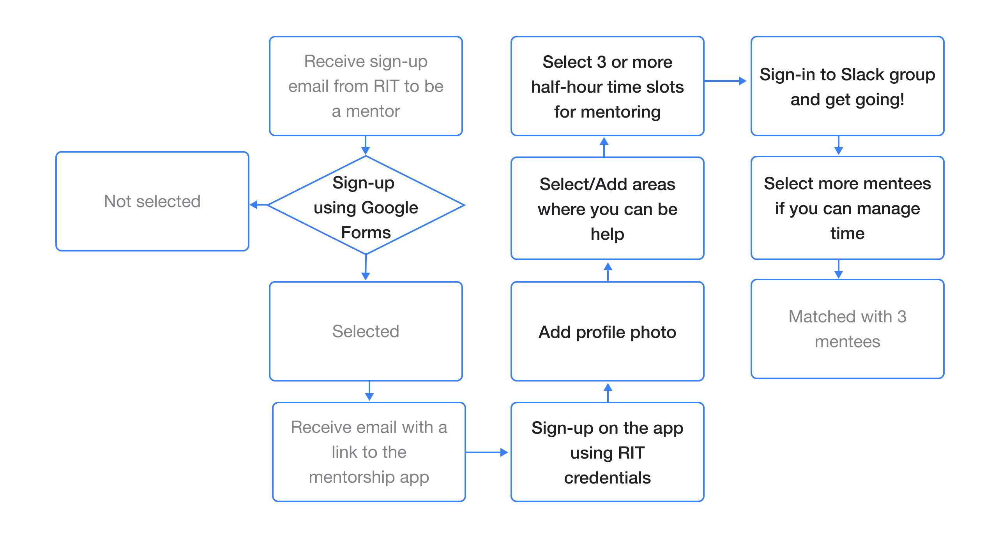
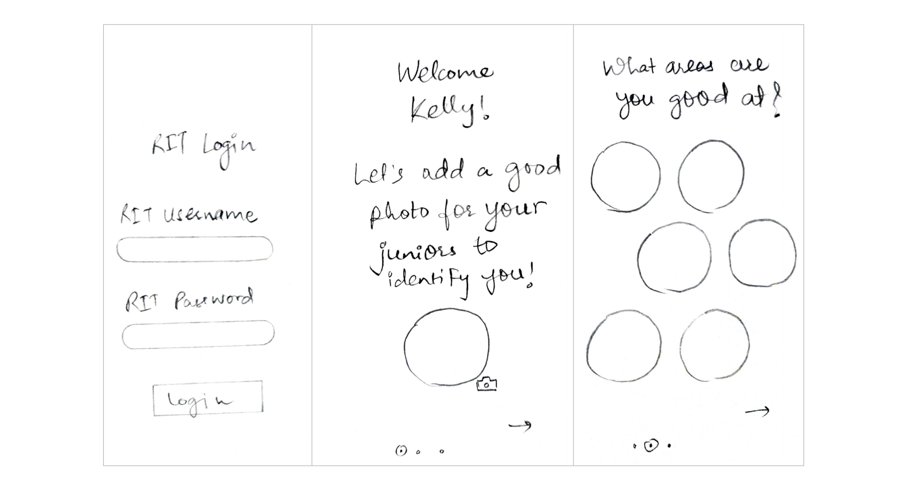
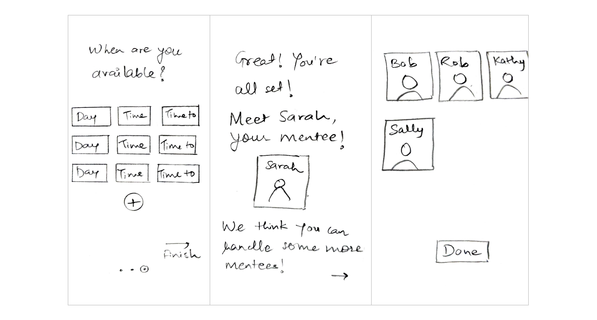

The Prompt
Your school wants to strengthen the community by encouraging experienced students to connect with new students and help them adjust to campus life. Design an experience that allows mentors and mentees to discover each other. Consider the needs of both mentors and mentees, including how someone may become a mentor and how to connect mentors to mentees.
Methods
Competitive Analysis, User Interviews, Needs Assesment, Lo-Fi Wireframes, Iterative Hi-Fi Wireframes, User Feedback
Logistics
Software: Figma
Duration: 7 Days
Competitive Analysis
I started my research with understanding the existing mentorship solutions. I analyzed 3 different mentorship platforms: Facebook mentorship group, Slack mentorship groups and Rochester Institute of Technology (RIT) Peer Advisor Leader (PAL) Program. The first two platforms are global platforms and the third one is the mentorship program at my own institution. The major insights from each platform are as follows:

Facebook Mentorship Group
Benefits:
Group admins are responsible to pair mentors with mentees
One-on-one mentorship is provided
A guided program is provided to encourage weekly check-ins with-in the pairs
Limitations:
Difficult to pair up with the people with same area of interest
After connection, there is no one to check-in and a lot of times, either mentor or the mentee stop responding

Slack Mentorship Group
Benefits:
Forum type setting where anyone can post questions and anyone can answer
Open and closed channels can be created
Moderator can check-in on the separate channels
Limitations:
Questions get lost in the conversation stream
No one is responsible to answer so a lot of times no one in the group replies
RIT Peer Advisor Leader (PAL) Program
Benefits:
University based program for new students
Students are selected by the organization on the basis of their answers they submit in the selection form
The PALs get paid for the work
Limitations:
Group of 30-40 students managed by one PAL which is a lot of students
The PALs and mentees may not be from the same department
User Research
I conducted qualitative interviews of the students who were a part of the RIT mentorship program as a mentor (or PAL) and as a mentee. Some of the questions I asked are as follows:
For Mentees:
What were your concerns when you decided to join RIT? What did you do about it?
How was your experience with the PAL?
What worked well for you? What would you most want to change?For Mentors:
Why did you decide to become a PAL?
What was the process? How satisfied or dissatisfied are you with this process?
How did you communicate with the students? What are your thoughts on it?
What worked well for you? What would you most want to change?
Insights from the Interviews
From the interviews, I understood the pain-points and expectations of my target users and the major points that I noticed are as follows:
- For Mentees:
- Most of the mentees only need help at the beginning of the semester and the areas in which they need help are: post admission process, housing, course selection and getting part-time jobs
- Even though the students had PALs, they contacted various other seniors from their own department through LinkedIn and Facebook as the PALs were not aware of the department specific requirements and details
- They would prefer one-on-one mentorship so that someone is reesponsible for answering their questions unlike forums where people usually stop responding after some time
- There should be a moderator or some one from the organizational team to look over the mentoring process so that mentors actually respond to the mentees as promised
- For Mentors:
- Students who register to be a mentor should be really interested in mentoring otherwise they don't take it seriously
- Students who received help previously from their seniors don't mind guiding other students who need help
- After some time, the students start asking "silly questions" if they have continuous access to the mentors
User-Flow
After analyzing the user requirements, I understood that people don't want to maintain different applications. So, I decided to use existing solutions like Google forms to sign-up to be a mentor (the users don't need to download another app unless they are actually selected to be a mentor) and Slack for communication between the mentors and mentees. My solution "RIT Mentorship" will be used to match mentors to mentees and to manage profile. It will be an extension to the existing RIT mobile application. The user flow for mentor is as follows:
Sign-up Google Form
I decided to use Google forms for existing students to sign up as a mentor. As I mentioned earlier, it is very necessary to find students who really want to mentor new students. Considering this, I designed a Google form which can be found HERE
In this form, the users are asked general demographic questions and then one subjective question is asked "Why do you want to register as a mentor?" These forms will be evaluated by a person from the team who is managing this mentorship program at RIT and based on the answers, students will be selected to be a mentor. When they are selected, they will receive an email with a link to the RIT Mentorship app extension where they can create a profile and get paired with mentees.
Low-Fidelity Wireframe
I started with low-fidelity wireframes and designed the onboarding and mentor-mentee matching experience
 High-Fidelity Wireframe
High-fidelity wireframes